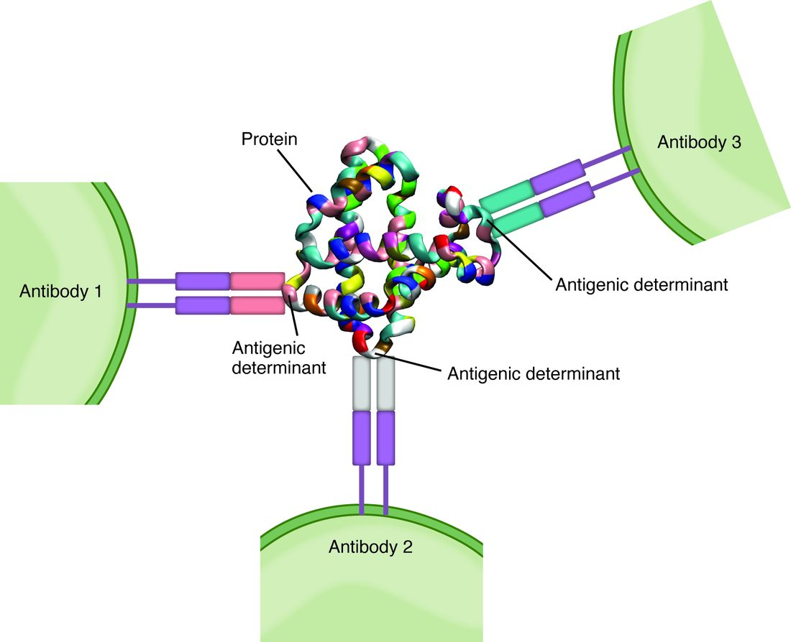

Antigens, lymphocytes and antigen presentation
1Why this matters
Baby Amara, 4 months old, has had thrush in her mouth for weeks and now a viral chest infection that will not clear. Her neutrophil count and complement are normal. A chest X-ray shows no thymus shadow, and her blood holds almost no T cells. Without a thymus, one whole line of lymphocytes has had nowhere to mature, and the defenses that depend on recognizing a specific antigen are failing.
2What this builds on
3Quick check before you start
1. What is an antigen?
- Any molecule a lymphocyte receptor protein or antibody binds specifically
- A protein released by lymphocytes to kill microbes
- A white blood cell that engulfs microbes
Show the answer
An antigen is the molecule recognized, often a protein or glycoprotein on a microbe or cell. Antibodies are the proteins that bind antigens.
- Correct: Any molecule a lymphocyte receptor protein or antibody binds specifically:
- A protein released by lymphocytes to kill microbes:
- A white blood cell that engulfs microbes:
2. Which organ is a primary lymphoid organ where one line of lymphocytes matures?
- Spleen
- Thymus
- Palatine tonsil
Show the answer
The thymus and red bone marrow are the primary lymphoid organs. The spleen and tonsils are secondary organs, where mature lymphocytes meet antigens.
- Spleen:
- Correct: Thymus:
- Palatine tonsil:
3. How does a macrophage take in a bacterium?
- By exocytosis
- By phagocytosis into a vesicle that fuses with lysosomes
- By diffusion through its membrane
Show the answer
The membrane flows around the bacterium and closes it into a vesicle, which fuses with lysosomes that digest it.
- By exocytosis:
- Correct: By phagocytosis into a vesicle that fuses with lysosomes:
- By diffusion through its membrane:
4Anatomy

With labels hidden, select a box to reveal its label.
5How it works, step by step
- A dendritic cell in the skin detects bacteria with its pattern recognition receptors and engulfs them.Lysosomes digest the bacteria into peptides, which are loaded onto MHC class II and shown on the cell surface.
- The loaded dendritic cell travels through afferent lymph to a lymph node's paracortex.Among the naive T cells passing through, the rare few whose receptors fit a displayed peptide bind it.
- Binding peptide on MHC plus the dendritic cell's second, confirming signal selects those T cells.They divide every 6 to 8 hours for several days, each forming a clone of identical cells (clonal expansion).
- The expanded clones differentiate.Most become short-lived fighting cells that act against the infection; a few become long-lived memory cells.
- The same bacteria enter the body again years later.The more numerous, quicker memory cells respond within a day or two, and the infection is cleared before illness develops.
6Core concepts
7A common mistake
The wrong idea: When a new microbe arrives, lymphocytes shape their antigen receptors to fit it.
What actually happens: Each lymphocyte builds its antigen receptor at random, by joining gene pieces, while it matures and before it ever meets an antigen. Millions of different receptors exist in advance. The antigen does not instruct anything: it selects the rare cells whose receptors already fit, and those cells multiply. That is clonal selection, and it is why the first response to a new antigen takes days.
8Check yourself
Anything you miss goes into your review queue.
1. A single bacterial protein is injected into a rabbit. Weeks later, the rabbit's blood holds antibodies from many different clones, all against that one protein. What explains this?
- The protein changed shape to fit each clone
- One clone switched its antigen receptor to a new shape many times over
- The protein was contaminated with other proteins
- Each clone recognizes a different epitope on the protein
Show the answer
A large protein has many epitopes on its surface. Each is recognized by different lymphocytes, so the one protein selects many clones at once: a polyclonal response.
- The protein changed shape to fit each clone: The antigen does not reshape itself or the antigen receptors. Receptors are made at random in advance, and the antigen selects those that already fit.
- One clone switched its antigen receptor to a new shape many times over: Each lymphocyte and its clone carry one receptor specificity. Many clones, not one changing clone, explain the variety.
- The protein was contaminated with other proteins: Nothing suggests contamination. Even a pure protein carries many epitopes.
- Correct: Each clone recognizes a different epitope on the protein: Correct. Many epitopes on one antigen select many clones.
2. A virus infects liver cells and makes its proteins in their cytosol. How do T cells find out that a particular liver cell is infected?
- The liver cell releases free viral proteins that T cells bind
- The liver cell displays viral peptides on MHC class II
- The liver cell displays viral peptides on MHC class I
- Complement coats the liver cell so T cells can grip it
Show the answer
Proteins made inside a cell, including viral ones, are chopped into peptides in the cytosol, loaded onto MHC class I in the endoplasmic reticulum and shown on the surface. Nearly every nucleated cell, liver cells included, does this, so T cells of the killing kind can spot the infected cell.
- The liver cell releases free viral proteins that T cells bind: T cell receptors do not bind free antigen. They bind only peptides held on MHC proteins.
- The liver cell displays viral peptides on MHC class II: MHC class II is found on antigen-presenting cells and displays material taken in from outside, not proteins made in an ordinary liver cell's cytosol.
- Correct: The liver cell displays viral peptides on MHC class I: Correct. Class I shows what a cell makes inside itself.
- Complement coats the liver cell so T cells can grip it: T cells do not recognize complement. Their antigen receptors bind peptide on MHC.
3. Put the steps in order to show how bacteria in a cut on the hand come to be presented to a naive T cell.
- A dendritic cell in the skin engulfs the bacteria after its pattern recognition receptors detect them
- The vesicle holding the bacteria fuses with lysosomes, and bacterial proteins are cut into peptides
- The peptides are loaded onto MHC class II and carried to the cell surface
- The dendritic cell travels through afferent lymphatic vessels to a lymph node in the armpit
- In the paracortex, a naive T cell whose receptor fits a displayed peptide binds it
Show the answer
The dendritic cell captures the bacteria, processes them into peptides in lysosome-fused vesicles, loads the peptides onto class II, and carries them through the lymph to the node's paracortex, where the rare naive T cell with a matching antigen receptor finds them.
- Correct order: 1. A dendritic cell in the skin engulfs the bacteria after its pattern recognition receptors detect them 2. The vesicle holding the bacteria fuses with lysosomes, and bacterial proteins are cut into peptides 3. The peptides are loaded onto MHC class II and carried to the cell surface 4. The dendritic cell travels through afferent lymphatic vessels to a lymph node in the armpit 5. In the paracortex, a naive T cell whose receptor fits a displayed peptide binds it
4. In the thymus cortex, a thymocyte's new receptor cannot bind any of the person's own MHC proteins. What happens to it, and why?
- It is kept, because it cannot attack self
- It leaves as a naive T cell and waits for a matching microbe
- It becomes a memory cell without further testing
- It dies, because it could never recognize any antigen
Show the answer
T cells recognize peptides only when held on self MHC. An antigen receptor that cannot bind self MHC at all could never recognize anything, so the thymocyte gets no survival signal and dies of neglect. This is positive selection.
- It is kept, because it cannot attack self: Being unable to attack self is not enough; the cell must also be able to use self MHC. Without that, it is useless and is not kept.
- It leaves as a naive T cell and waits for a matching microbe: It never leaves. Only thymocytes that pass both positive and negative selection are released.
- It becomes a memory cell without further testing: Memory cells form only after a mature lymphocyte meets its antigen and expands. A thymocyte has not.
- Correct: It dies, because it could never recognize any antigen: Correct. Failing positive selection means death by apoptosis.
5. A student described a first immune response to a new virus. One step is wrong. Which one?
- Each maturing lymphocyte builds its antigen receptor genes from randomly chosen pieces of DNA
- When the virus arrives, lymphocytes reshape their antigen receptors to fit its epitopes
- Dendritic cells carry viral peptides to the lymph nodes
- The rare naive lymphocytes whose receptors already fit are selected
- Selected lymphocytes divide into clones of identical cells
Show the answer
Receptors are made at random before any antigen is met, and they do not change to fit a new antigen. The antigen selects the cells that already fit. That is the core idea of clonal selection.
- Each maturing lymphocyte builds its antigen receptor genes from randomly chosen pieces of DNA: This step is right. Random joining of gene pieces makes each lymphocyte's receptor unique.
- Correct: When the virus arrives, lymphocytes reshape their antigen receptors to fit its epitopes: This is the error. The antigen selects existing receptors; it does not reshape them.
- Dendritic cells carry viral peptides to the lymph nodes: This step is right. Dendritic cells present viral peptides in the lymph node paracortex.
- The rare naive lymphocytes whose receptors already fit are selected: This step is right. This is clonal selection.
- Selected lymphocytes divide into clones of identical cells: This step is right. This is clonal expansion.
6. A mature T cell whose receptor fits a thyroid protein escaped negative selection. In a lymph node, it meets that protein, on MHC, on a resting dendritic cell that carried it from the thyroid, detected no danger and gives no second, confirming signal. What is most likely to happen?
- The T cell switches on and attacks the thyroid
- The dendritic cell is killed by NK cells
- The T cell travels back to the thymus to be tested a second time
- The T cell stops responding for a long time (clonal anergy)
Show the answer
A naive T cell needs two signals: its antigen receptor binding peptide on MHC, and a confirming signal from a dendritic cell that has detected danger. Binding without the second signal makes it unresponsive for a long time. This clonal anergy is part of peripheral tolerance.
- The T cell switches on and attacks the thyroid: Switching on needs the second signal, which a resting dendritic cell does not give. Attack would require tolerance to fail.
- The dendritic cell is killed by NK cells: The dendritic cell displays normal MHC class I and shows no stress proteins, so NK cells leave it alone.
- The T cell travels back to the thymus to be tested a second time: Mature T cells do not return to the thymus to be retested. Tolerance out in the body is peripheral tolerance.
- Correct: The T cell stops responding for a long time (clonal anergy): Correct. Binding without a confirming signal causes anergy.
7. Priya had chickenpox at age 5. At 30 she nurses her nephew through chickenpox and never becomes ill. What best explains this?
- Her innate immunity has become specific to the virus
- Antibodies from age 5 are still circulating unchanged
- Her MHC proteins no longer bind the virus
- Memory cells respond before the virus can spread
Show the answer
Her first infection left memory B and T cells: far more numerous than the original naive cells, long-lived, and quick to switch on. When the virus returned, they responded within a day or two and cleared it before she felt ill.
- Her innate immunity has become specific to the virus: Innate immunity recognizes patterns shared by groups of microbes and does not become specific to one virus.
- Antibodies from age 5 are still circulating unchanged: The antibody molecules made at age 5 were broken down within weeks. Any antibody in her blood now is newly made by cells left from that first response, and her memory cells add a fast, strong new response.
- Her MHC proteins no longer bind the virus: Her MHC proteins are inherited and do not change. Losing the ability to present the virus would make her more vulnerable, not less.
- Correct: Memory cells respond before the virus can spread: Correct. Immunological memory rests on memory cells.
8. A snake venom protein circulates free in the plasma. Which lymphocytes can bind it directly, without any other cell presenting it?
- T cells
- Thymocytes
- B cells
- NK cells
Show the answer
B cell receptors, membrane-bound antibodies, bind epitopes on intact antigens free in fluid. T cells can recognize the venom only after an antigen-presenting cell has processed it and displayed its peptides on MHC.
- T cells: T cell receptors bind only peptides held on MHC proteins, not free proteins in plasma.
- Thymocytes: Thymocytes are immature T cells in the thymus; they do not respond to antigens in the plasma.
- Correct: B cells: Correct. B cells bind intact, free antigen directly.
- NK cells: NK cells carry no antigen receptor. They check other cells for stress proteins and missing MHC class I.
9Summary
An antigen is any molecule a lymphocyte receptor or antibody binds specifically; each antigen receptor binds one small part, an epitope, and one antigen's many epitopes select many clones (a polyclonal response). B cells mature in the red bone marrow and bind intact antigen with a membrane-bound antibody. T cells mature in the thymus from thymocytes and see only short peptides held on MHC proteins. MHC class I, on nearly all nucleated cells, shows peptides made inside the cell; MHC class II, on antigen-presenting cells (dendritic cells, macrophages, B cells), shows peptides from material taken in. MHC genes vary enormously between people. Dendritic cells process antigen and carry it to the lymph node paracortex to present it to naive T cells. Positive selection keeps thymocytes that can use self MHC; negative selection deletes those that bind self strongly (central tolerance); anergy and suppression keep escaped self-reactive cells quiet (peripheral tolerance). Antigen selects the few matching naive lymphocytes, which expand into clones of fighting cells and memory cells; memory cells make the next response faster and stronger.